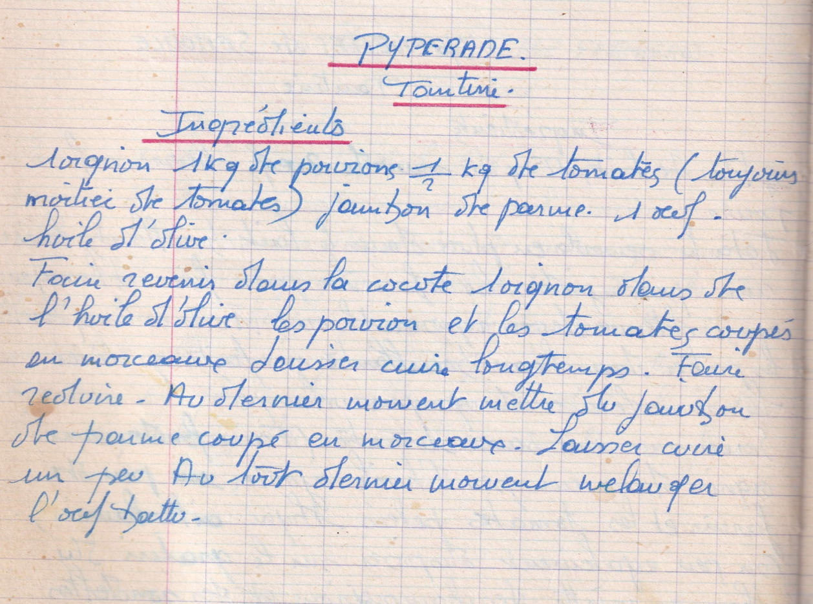

Pyperade
Tantine

LISTE DES INGREDIENTS
- 1 oignon
- 1kg de poivrons
- 1/2kg de tomates (Toujours moitié de tomates)
- Jambon de parme
- 1 oeuf
- Huile d'olive
PREPARATION
- Faire revenir dans la cocotte 1 oignon dans de l'huile d'olive
- Les poivrons et les tomates coupés en morceaux
- Laisser cuire longtemps, faire réduire
- Au dernier moment, mettre du jambon de parme coupé en morceaux
- laisser cuire un peu
- Au tout dernier moment mélanger l'oeuf battu